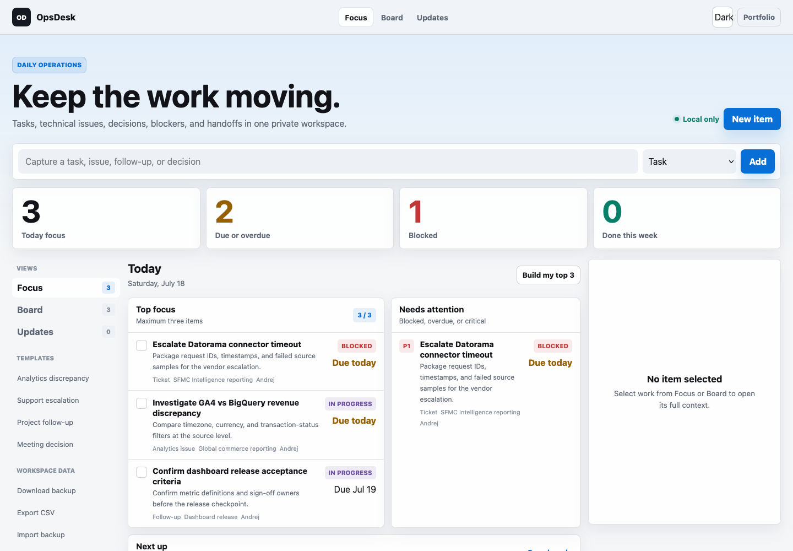

Customer-facing operations
Customer support, technical support, business development, analytics support, project management, and product ownership.
Technical Project Manager for customer-facing operations, support systems, analytics delivery, and practical workflow ownership.
I turn unclear customer problems into clean tickets, useful documentation, reliable handoffs, and work that teams can actually finish.
Proof
Support, sales, analytics, IT, and project roles connected by one pattern: understand the problem, structure the work, and move it forward.
Customer support, technical support, business development, analytics support, project management, and product ownership.
Databox leadership highlights API/SQL support, complex ticket handling, upper-tier technical support growth, process improvement, and customer outcomes.
A formal recommendation letter from Emil Korpar, Director of Support at Databox, supports the same story.
QA, network administration, CCNA, MikroTik, LPIC-1, ISO 27001, Zendesk, HubSpot, Google Analytics, Scrum, and more.
Experience
Open a role to see the tools, decisions, and outcomes behind the title.
Moved into product ownership after six months, owning Analytics and SFMC Intelligence priorities, stakeholder alignment, reporting support, and delivery clarity across teams.
Jira, Asana, Confluence, Slack, Salesforce Marketing Cloud Intelligence / Datorama, GA4, BigQuery, GTM, Looker Studio, APIs, AWS S3, Excel, CSV/XLS ingestion, GitHub, DevOps, LM Studio, custom LLM workflows.
Led analytics delivery across digital marketing, websites, eCommerce, reporting support, data quality, stakeholder requests, and documentation.
GA4, GA4 BigQuery Export, BigQuery, SQL, Salesforce Marketing Cloud Intelligence / Datorama, Google Tag Manager, Looker Studio, Google Ads, Meta Ads, LinkedIn Ads, Amazon Ads, Amazon Vendor Central, REST APIs, AWS S3, Excel, CSV/XLS ingestion, Jira, Asana, Confluence, Slack, GitHub, DevOps.
Advanced analytics technical support across customer dashboards, connector stability, metric validation, API issues, SQL/database sources, and cross-team escalations.
GA4, Adobe Analytics, Amplitude, Google Play, Google Ads, Facebook Ads, Instagram Business, LinkedIn Ads, SEMrush, HubSpot, Salesforce, Shopify, Stripe, QuickBooks, MySQL, Google BigQuery, Amazon Redshift, Snowflake, Azure, Intercom, Zendesk, Freshdesk, Google Sheets, Excel, Postman, wget/curl, Slack, Confluence, Zoom.
Customer and product education role across onboarding, discovery, lead qualification, demo scheduling, sales handoffs, and platform adoption.
HubSpot, Intercom, Slack, Confluence, Zoom, LinkedIn, chat/email outreach, lead qualification frameworks, customer discovery, sales handoff notes, product education workflows.
Retail infrastructure support across network equipment, POS systems, enterprise hardware, dispatching, ticket updates, and operational continuity.
ServiceNow, Java Technician Dispatching System, NCR dispatching tools, Citrix, Cisco Jabber, Zoiper, CMD, PowerShell, Unix/Linux, Excel, Cisco/Meraki/Juniper switches, POS systems, scanners, debit readers, registers, displays, printers, cabling, and retail hardware suites.
Recommendations
Everything here is visible on LinkedIn. Full recommendation text where it matters, plus direct proof links so the section feels verifiable, not decorative.
Featured recommendation
I've had the pleasure of working with Andrej over the past two years, having hired him into our Customer Support Specialist role, where he's since reached a Level 2 seniority. Right from the start, Andrej's valuable technical experience stood out. It allowed him to troubleshoot complex cases quickly and collaborate closely with our technical support team, which made our entire process faster and more efficient.
Andrej isn't just technically skilled; he's a top performer who's led trainings, improved process efficiency, supported our Sales Development team, and consistently focused on helping customers.
CEO at Databox
Andrej is a valuable member of our customer support team. He has deep product knowledge and is especially skilled at helping customers with our API and SQL integrations. This enabled him to resolve tickets quickly, even in complex cases. He also goes beyond just answering customer questions, offering proactive guidance and suggestions to customers on how to get more out of our product.View on LinkedIn
Director of Revenue Operations
Andrej brought a strong technical foundation and a proactive approach to problem-solving. He consistently went above and beyond to ensure customers received timely, accurate, and thoughtful support, whether troubleshooting complex issues, onboarding new users, or creating helpful resources.
He partnered closely with all teams to surface customer insights and drive improvements across our platform.View on LinkedIn
Sales Development Manager
I had the pleasure of managing Andrej from the very beginning of his career at Databox. Despite joining in a role that didn't directly require his technical background, Andrej found ways to leverage his knowledge to provide exceptional support to inbound leads.
What stood out was how Andrej combined technical expertise with strong communication skills. He rapidly sharpened his sales acumen, learning how to read beyond the immediate context in chat and guide conversations toward the best possible outcome.View on LinkedIn
Data & Business Intelligence Analyst
Andrej has always proven to be a great colleague, fast paced and always eager to learn and help. Wherever Andrej is, you know you will have a confident person, someone who can work under pressure and have amazing results. He always is on top when his targets are being taken into consideration.View on LinkedIn
Technical Sales Consultant
I was impressed that someone so young already had so much experience and knowledge in the field. Even more than me at the moment. In the months that followed, he proved how capable he is, handling multiple user requests at the same time and resolving them in short notice. Other people also saw that, since very soon he was the first in our group being promoted to the L2.View on LinkedIn
Business Account Manager / Customer Success
Andrej always went the extra mile to make sure customers felt supported, whether he was troubleshooting a tricky issue, walking a new user through Databox, or collaborating closely with our technical support team. He cared about making the customer experience the best it could be.
What I loved most about working with Andrej was his collaborative spirit. He set a great example for everyone around him.View on LinkedIn
Customer proof and communication
If you are looking for a driven, result oriented person, Andrej is the way to go. In the company we had an initiative to obtain more customer stories and Andrej took it to heart. Out of 30 we received, 24 came from Andrej. His sales-savvy communication would be a great addition to any team.View on LinkedIn
AI and customer success specialist
I had the privilege of working with Andrej at Databox, where we collaborated closely on SaaS projects, prospecting, and various customer-facing tasks. Andrej is a great professional and always a team player, ready to help others. Beyond technical and professional expertise, Andrej is a thoughtful teammate who raises the bar for everyone around him.View on LinkedIn
Technical Support / BI & Data Solutions mentor
Throughout our mentorship, Andrej demonstrated a genuine commitment to learning. He was not only an attentive listener but also proactive in bringing up thoughtful topics and applying newly acquired knowledge in practice.
Beyond his technical growth, Andrej is a fantastic communicator and team player. Working with him was effortless, and his positive attitude made our collaboration both productive and enjoyable.View on LinkedIn
CX & Support Ops
He is incredibly hard working, punctual, and reliable, which makes him a trusted team member that everyone could count on. What stands out most is his strong technical knowledge and adaptability. Andrej has a natural ability to quickly learn new things, troubleshoot challenges, and share insights with the team in a way that makes complex topics easy to understand.View on LinkedIn
Customer Support Specialist
Andrej was much quicker in picking up everything and was instantly seen as someone who was results-oriented. He spent some time working in Sales Development, driving leads for the Sales team, and then joined us in Customer Support to teach us what he's learned and share all of his tricks with us.
When he joined Customer Support, coming from Sales Development, he was 200% of his target in the first month of joining.View on LinkedIn
Cybersecurity and collaboration
I highly recommend Andrej Glavnik for any opportunity. He is a hardworking and dedicated professional with a wealth of experience and expertise in cyber security. He is a skilled communicator and a team player, always willing to go the extra mile to ensure projects are completed on time and to the highest standard.View on LinkedIn
Certificates
Everything here is visible on LinkedIn. QA, support, networking, security, analytics, and project foundations.
Verified credentials
Use the cards or the button to verify the certification list directly on the profile.
ITAcademy by LINKgroup | Issued Sep 2025
View on LinkedInITAcademy by LINKgroup | Issued Sep 2024
View on LinkedInITAcademy by LINKgroup | Issued Sep 2024
View on LinkedInITAcademy by LINKgroup
View on LinkedInITAcademy by LINKgroup | Issued Sep 2024
View on LinkedInSkillFront | Issued Jul 2024
View on LinkedInZendesk | Issued Nov 2023
View on LinkedInCertiprof | Issued Jul 2024
View on LinkedInGoogle | Issued Apr 2024
View on LinkedInHubSpot | Issued May 2024
View on LinkedInDatabricks | Issued Apr 2024
View on LinkedInITAcademy by LINKgroup | Issued Nov 2023
View on LinkedInTools
Tools are grouped by the work they supported: tickets, customers, analytics, data, project delivery, IT, and practical automation.
ServiceNow, Zendesk, Freshdesk, Intercom, HubSpot, Jira, ticket notes, escalation packs, KB updates.
HubSpot CRM, live chat, email outreach, MEDDPICC, BANT, demo scheduling, sales handoffs, customer proof requests.
GA4, BigQuery, Datorama, Looker Studio, Google Ads, Meta Ads, LinkedIn Ads, Amazon Ads, Vendor Central.
SQL, MySQL, Snowflake, Redshift, Azure, APIs, Postman, curl/wget, AWS S3, CSV/XLS pipelines.
Asana, Jira, Confluence, Slack, delivery notes, requirements, handover docs, stakeholder reporting.
Cisco, Meraki, Juniper, Citrix, Jabber, PowerShell, Linux, POS systems, NCR tools, retail hardware.
Builds
OpsDesk keeps daily delivery moving. SyncDesk preserves the ownership, schema, business logic, and change history behind connected data.
Live · local-first
A daily operations workbench for tasks, support cases, analytics issues, blockers, decisions, handoffs, and team updates.
Runs in the browser. No account, backend, tracking, or data upload.

Live · local-first
A data-connection knowledge workspace for owners, sync coverage, schema, calculated logic, discrepancies, runbooks, and date-based manifest history.
Shares one portable local workspace with OpsDesk. No account, backend, tracking, or data upload.

Contact
Best fit: technical project management, customer-facing operations, support/analytics workflows, product ownership, ticketing systems, documentation, and cross-functional delivery.